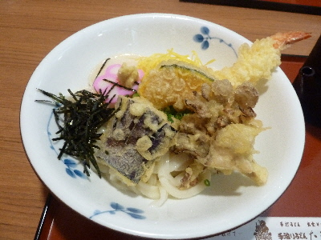

たまきの天ぷらうどん
2016/07/30
スーパーでタマキのうどん（袋入り生タイプ）を買って食べることはよくあるんですが、お店で食べるのは久しぶりです。

スーパーのうどんとお店のうどんは全然違いますね。
太くてコシがとても強いです。
この冷やしうどんにぴったり合ってて美味しかったです。
たまにはお店のうどんもいいですね。
島根県出雲市塩冶町1224
2016/07/30
スーパーでタマキのうどん（袋入り生タイプ）を買って食べることはよくあるんですが、お店で食べるのは久しぶりです。

スーパーのうどんとお店のうどんは全然違いますね。
太くてコシがとても強いです。
この冷やしうどんにぴったり合ってて美味しかったです。
たまにはお店のうどんもいいですね。